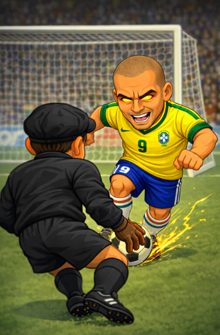

Ronaldo Nazário: el delantero que hizo del gol un espectáculo
Inicios
Ronaldo Luís Nazário de Lima nació en Río de Janeiro, Brasil, y desde temprana edad demostró una velocidad y potencia fuera de lo común. Su irrupción en el fútbol profesional fue meteórica, convirtiéndose rápidamente en uno de los delanteros más temidos del planeta.
Trayectoria en clubes
- Cruzeiro: El club donde explotó su talento goleador.
- PSV Eindhoven: Dominio absoluto en Europa a corta edad.
- FC Barcelona: Una temporada histórica que marcó época.
- Inter de Milán: Su etapa más completa antes de las lesiones.
- Real Madrid: Regreso triunfal y protagonismo entre los Galácticos.
- AC Milan y Corinthians: El cierre de una carrera legendaria.
Logros y reconocimientos
Ronaldo redefinió el rol del delantero moderno:
- 2 Balones de Oro (1997 y 2002)
- Campeón del Mundo 1994 y 2002
- Máximo goleador del Mundial 2002
- Mejor jugador del mundo FIFA (3 veces)
Su regreso tras graves lesiones es considerado uno de los mayores retornos en la historia del deporte.
Impacto económico y mediático
Ronaldo fue uno de los primeros futbolistas globales del marketing moderno. Su imagen trascendió el deporte, convirtiéndose en ícono publicitario y embajador del fútbol brasileño en el mundo.
Estilo de juego
Explosivo, técnico y letal. Ronaldo combinaba velocidad, potencia y definición con una facilidad asombrosa. En su mejor versión, fue prácticamente imparable dentro del área y en el mano a mano.